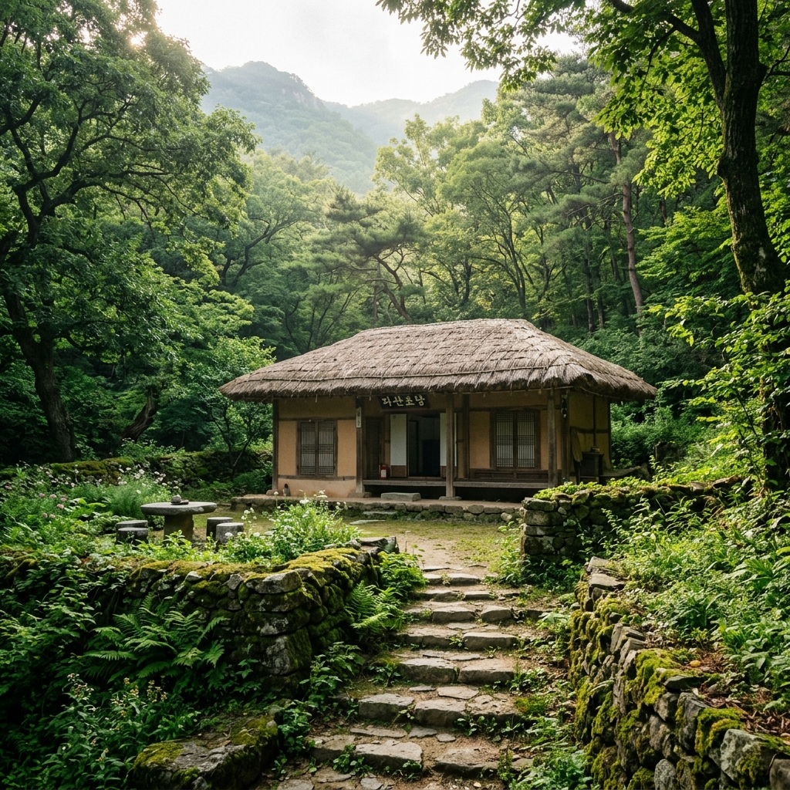
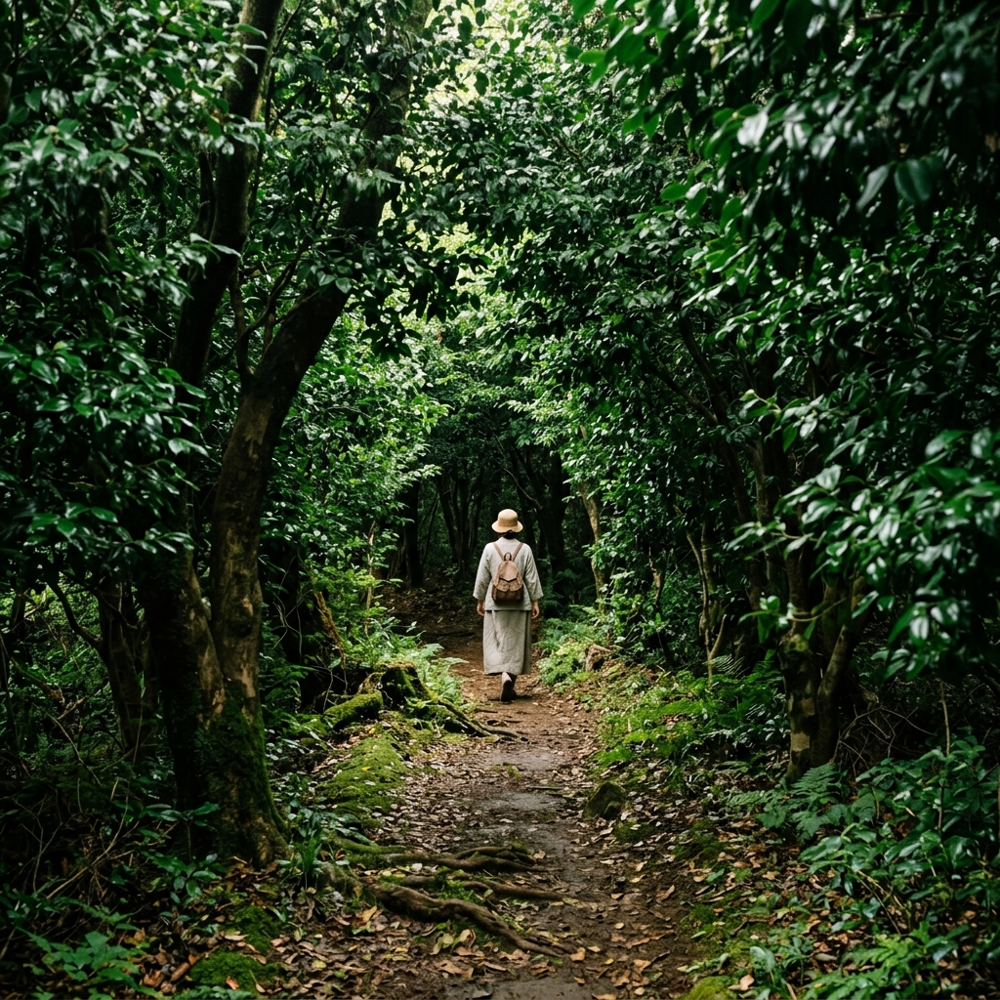
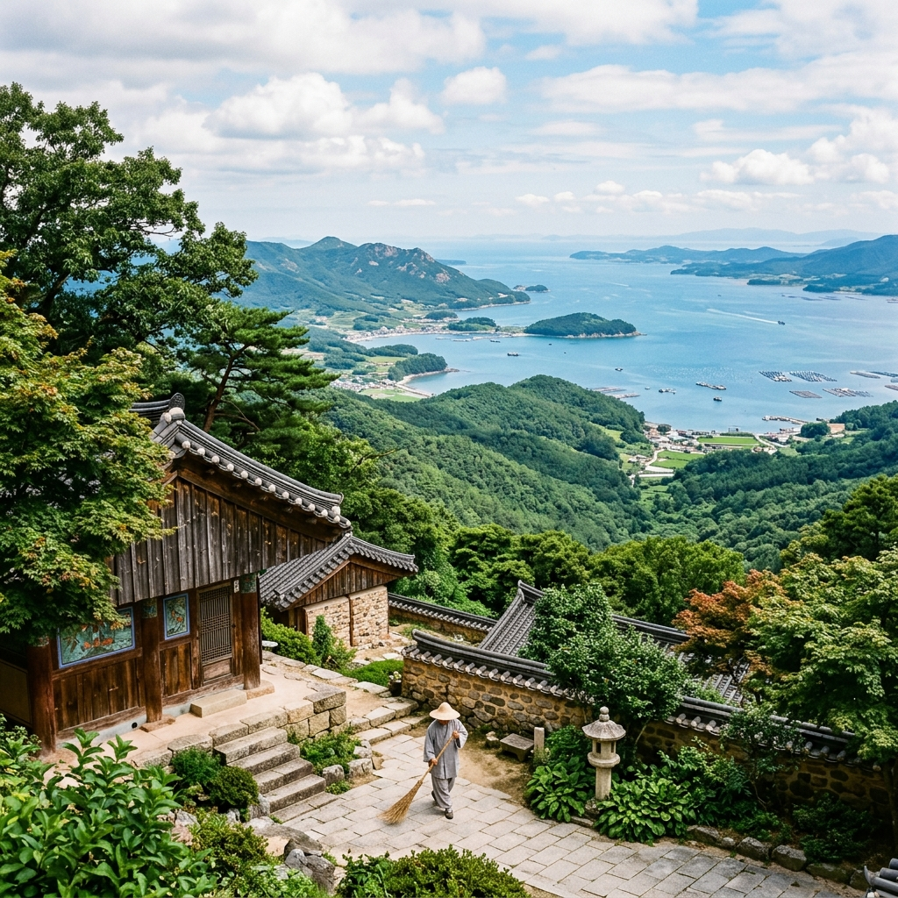

강진 다산초당·백련사 2026 — 정약용 유배지 신록 트레킹과 동백숲 1km 오솔길 완전 가이드
전라남도 강진군 도암면 만덕산(萬德山) 자락에는 조선 후기 최고의 실학자 정약용(丁若鏞, 1762~1836)이 18년간의 유배 생활 중 500여 권의 저서를 완성한 역사 현장 다산초당(茶山草堂)이 있습니다. 그리고 불과 1km 떨어진 능선 너머에는 천 년 고찰 백련사(白蓮社)가 자리하며, 두 명소를 잇는 동백숲 오솔길은 정약용과 백련사 주지 혜장(惠藏) 스님이 함께 걸었던 역사의 길입니다. 6월 초여름, 짙은 신록으로 덮인 이 1km 산길은 지성과 자연이 공존하는 한국 최고의 문화·생태 트레킹 코스입니다.
📚 다산초당의 역사 — 유배지에서 탄생한 500권의 학문
정약용은 1801년(순조 1년) 신유박해로 인해 전라남도 강진으로 유배되어 1818년까지 무려 18년이라는 긴 세월을 이곳에서 보냈습니다. 처음에는 강진 주막집의 방 한 칸에서 시작한 유배 생활은, 1808년(순조 8년) 지금의 다산초당 자리인 만덕산 남쪽 기슭으로 이주하면서 본격적인 학문 탐구의 시간으로 전환됩니다.
다산초당에서 정약용은 제자들과 함께 기거하며 대표 저작들을 완성했습니다. 『목민심서(牧民心書)』(1818)는 지방관의 올바른 통치를 논한 행정학의 고전이며, 『경세유표(經世遺表)』는 국가 제도 개혁안을 담은 정치경제학 저술입니다. 또한 『흠흠신서(欽欽新書)』는 형사 사건 처리의 원칙을 논한 법학서로, 이 세 저작을 포함하여 총 500여 권에 달하는 저서가 강진 유배 기간 중 완성되었습니다.
유배라는 절망적인 상황에서 이처럼 방대한 학문적 성과를 낼 수 있었던 배경 중 하나가 바로 인근 백련사 혜장 스님과의 교류였습니다. 두 사람은 학문적 동반자로서 차(茶)를 매개로 교류를 이어갔고, 정약용은 백련사로 걸어가거나 혜장 스님을 다산초당으로 불러 학문과 인생에 대한 깊은 이야기를 나눴습니다. 그 길이 지금 우리가 걷는 1km 오솔길입니다.

정약용이 18년 유배를 보낸 다산초당 전경 / AI 제작 이미지
🌳 다산초당에서 백련사까지 — 1km 동백숲 오솔길
다산초당 뒤편 안내판을 따라 산으로 오르면 만덕산 중턱 능선을 넘어 백련사로 이어지는 오솔길이 시작됩니다. 전체 거리는 약 1km, 성인 걸음으로 약 30분이면 완주할 수 있는 비교적 짧은 코스이지만, 이 짧은 거리 안에 오랜 세월이 빚어낸 깊고 풍성한 자연이 담겨 있습니다.
산길의 핵심은 바로 동백나무(Camellia japonica) 군락입니다. 백련사 경내와 다산초당 사이 능선에는 수령 수백 년에 달하는 동백나무가 자생하는데, 그 수가 약 1,500그루에 달합니다. 이 동백 숲은 남도의 겨울과 이른 봄을 대표하는 풍경이지만, 6월 초여름에는 동백꽃 시즌이 끝나고 짙은 상록성 잎이 빽빽이 들어차 그 자체로 짙고 서늘한 초록의 터널을 만들어냅니다.
오솔길의 흙은 촉촉하고 부드러우며, 낙엽과 부엽토가 수십 센티미터 두께로 쌓여 발이 폭신하게 잠기는 느낌을 줍니다. 한여름에도 이 길 안에서는 기온이 5~8℃ 낮게 느껴지며, 선선한 산바람이 끊임없이 능선을 타고 흘러 들어옵니다. 새소리와 바람 소리 외에는 아무 소음도 없어, 걷다 보면 자연스럽게 정약용이 이 길을 걸으며 무슨 생각을 했을지 상상하게 됩니다.
🛕 백련사(白蓮社) — 천 년 고찰의 고요한 품
다산초당에서 오솔길을 넘으면 만나게 되는 백련사는 통일신라 시대 창건된 것으로 전해지는 고찰(古刹)입니다. '백련사(白蓮社)'라는 이름은 고려 시대 원묘국사 요세(了世, 1163~1245)가 이 절에서 백련결사(白蓮結社)를 조직하여 불교 개혁 운동을 펼쳤던 역사에서 유래합니다.
사찰 내부에는 대웅전을 비롯한 여러 전각이 고즈넉하게 배치되어 있으며, 경내 곳곳에서 오래된 석탑과 부도, 석등을 만날 수 있습니다. 특히 대웅전 앞에는 수령 400년이 넘는 흑매(黑梅) 한 그루가 서 있는데, 조선 중기부터 이 자리를 지켜온 이 노거수(老巨樹)는 절의 역사를 고스란히 담은 살아 있는 유산입니다.
2026년 현재 백련사는 상시 개방되어 있으며 입장료와 주차료 모두 무료입니다. 방문객에게 특별한 제한은 없지만, 사찰 경내에서는 큰 소리로 말하거나 뛰어다니는 행위를 삼가는 것이 예의입니다. 특히 스님들이 예불을 드리는 이른 아침이나 저녁에 방문할 경우 경건한 분위기를 유지해 주시기 바랍니다.

정약용이 걸었던 다산초당~백련사 동백숲 오솔길 / AI 제작 이미지
🗺️ 방문 안내 — 위치·교통·입장료
| 항목 | 내용 |
|---|
| 다산초당 위치 | 전라남도 강진군 도암면 다산초당길 68 |
| 백련사 위치 | 전라남도 강진군 도암면 백련사길 145 |
| 트레킹 거리 | 다산초당↔백련사 약 1km, 편도 약 30분 |
| 입장료 | 백련사 무료 / 다산초당 유적지 구역 별도 확인 권장 |
| 주차 | 다산초당 주차장, 백련사 주차장 각각 운영 (무료) |
| 운영 | 상시 개방 |
| 서울 출발 | KTX 광주송정 → 버스 강진행 / 총 약 3시간 30분 |
| 자가용 | 서해안고속도로 → 목포IC → 강진까지 약 4시간 (서울 출발) |
강진군청 문화관광과(061-430-3225)에 문의하면 다산초당 유적지 안내와 트레킹 코스에 대한 최신 정보를 얻을 수 있습니다. 특히 여름 우기 기간에는 오솔길 일부 구간이 미끄러울 수 있으니, 방문 전 기상 상황을 확인하고 등산화를 착용하시기 바랍니다.
🌿 6월 만덕산의 자연 생태 — 신록과 초여름 산의 숨결
6월의 만덕산은 짙은 초록으로 완전히 채워집니다. 동백나무의 상록 잎들이 윤기를 되찾고, 떡갈나무·졸참나무·신갈나무 등 활엽수 잎들이 진한 초록으로 무성하게 자라나 산 전체가 하나의 거대한 생명체처럼 숨을 쉬는 것 같습니다.
이 시기 오솔길에서 눈에 띄는 야생화로는 애기나리(Disporum smilacinum), 은방울꽃(Convallaria keiskei), 꽃며느리밥풀 등이 있습니다. 길 아래 자연 계류에서는 도룡뇽 유생(幼生)을 발견할 수 있으며, 청정 환경의 지표종인 두꺼비도 자주 목격됩니다. 해 질 무렵에는 솔부엉이의 울음소리가 산을 울리는데, 이 소리는 수백 년 전 정약용이 초당에서 저녁 글을 읽을 때도 들었을 바로 그 소리일 것입니다.
만덕산 해발 408m 정상은 다산초당·백련사 코스에서 약간 벗어나지만, 체력이 허락한다면 정상까지 올라 강진만(康津灣)의 탁 트인 조망을 즐기는 것을 추천합니다. 맑은 날에는 완도와 고금도 해안이 한눈에 들어오며, 한반도 남해안의 아름다운 리아스식 해안 지형을 감상할 수 있습니다.
☕ 다산(茶山)과 차(茶) — 강진에서의 차 문화 체험
정약용의 호인 '다산(茶山)'은 말 그대로 '차가 많이 나는 산'을 의미합니다. 강진은 예부터 차 생산지로 유명했으며, 정약용은 유배 생활 중 차를 통해 심신을 다스리고 지적 교류를 이어갔습니다. 혜장 스님이 직접 만든 떡차(餅茶)는 정약용에게 큰 위안이 되었고, 그는 이에 보답하여 혜장에게 유학의 지식을 가르쳐 주었습니다.
이러한 역사적 배경 덕분에 강진군에서는 '다산 차 문화' 관련 체험 프로그램을 운영하고 있습니다. 다산초당 인근의 다산박물관에서는 정약용의 생애와 저서를 체계적으로 전시하고 있으며, 전통 차 시음 체험 코너도 마련되어 있습니다. 방문 전 강진군 다산기념관 공식 홈페이지에서 운영 시간과 프로그램 일정을 확인하시기 바랍니다.
백련사 내에도 작은 찻집이 운영되며, 절 마당에 앉아 전통 차 한 잔을 마시는 경험은 이 여행 코스의 깊이를 한층 더해줍니다. 강진산 녹차와 유자차, 그리고 백련사에서 직접 만든 약재차가 메뉴에 포함되어 있습니다.
🍽️ 강진 미식 기행 — 한정식의 고장
강진은 전라남도를 대표하는 한정식의 고장입니다. 풍요로운 강진만의 해산물과 내륙 평야의 곡물, 만덕산의 산나물이 어우러진 강진 한정식은 전국적으로 미식가들의 발길을 이끕니다. 강진 읍내에는 20여 가지 반찬이 푸짐하게 차려지는 한정식 전문 식당들이 즐비하며, 가격 대비 음식의 품질이 뛰어나다는 평가를 받습니다.
특히 강진 청자와 연계한 여행을 계획 중이라면, 강진군 대구면 일대의 청자 도요지(도요마을)를 함께 방문하는 것을 추천합니다. 다산초당에서 차로 약 20분 거리이며, 고려청자 제작 체험과 박물관 관람을 통해 역사·문화·자연이 어우러진 풍성한 강진 여행을 완성할 수 있습니다.

백련사 경내에서 바라본 강진만 조망 / AI 제작 이미지
📅 강진 다산초당·백련사 추천 일정표
10:00 — 다산초당 주차장 도착, 다산박물관 관람 (45분)
11:00 — 다산초당 유적지 탐방 (정약용 유배 생활 공간, 다조, 정석 등 감상, 30분)
11:30 — 오솔길 진입, 동백숲 트레킹 시작 (편도 30분, 총 거리 1km)
12:00 — 백련사 도착, 경내 탐방 및 찻집 이용 (40분)
12:40 — 오솔길로 복귀 또는 백련사 주차장으로 하산
13:30 — 강진 읍내 이동, 강진 한정식으로 점심 (약 1시간)
15:00 — 강진 청자 도요지 방문 또는 가우도 출렁다리 연계 투어
📌 방문 시 주의사항 및 팁
✅ 강진 다산초당·백련사 방문 체크사항
✔ 오솔길은 1km, 30분이지만 장마철 이후 미끄러울 수 있음 — 등산화 권장
✔ 백련사 입장료 및 주차 무료 (상시 개방)
✔ 경내 예불 시간(새벽 4시, 저녁 6시) 전후 방문 시 조용히 관람
✔ 다산박물관 운영시간: 09:00~18:00 (월요일 휴관) — 방문 전 확인 권장
✔ 서울에서 강진까지 편도 3~4시간, 1박 2일 일정 추천
✔ 강진 한정식 인기 식당은 점심 11:30~13:00 가장 혼잡 — 예약 권장
✔ 6월은 동백 개화 시즌은 아니지만 초록 동백숲이 가장 울창한 시기
#강진다산초당
#백련사트레킹
#정약용유배지
#강진여행2026
#동백숲오솔길
#전남여행
#강진관광
#남도여행
#다산박물관
#강진가볼만한곳